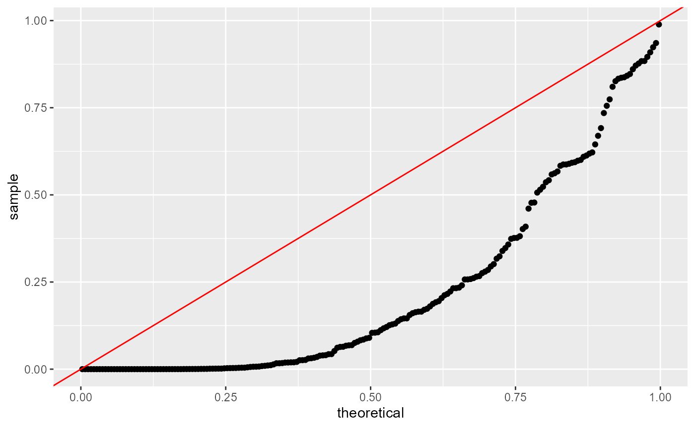
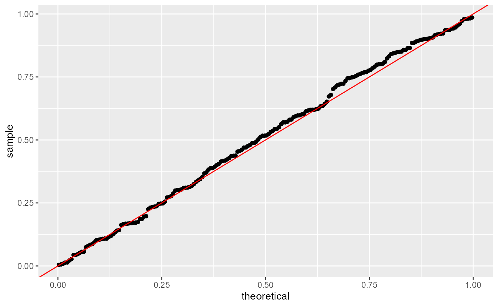
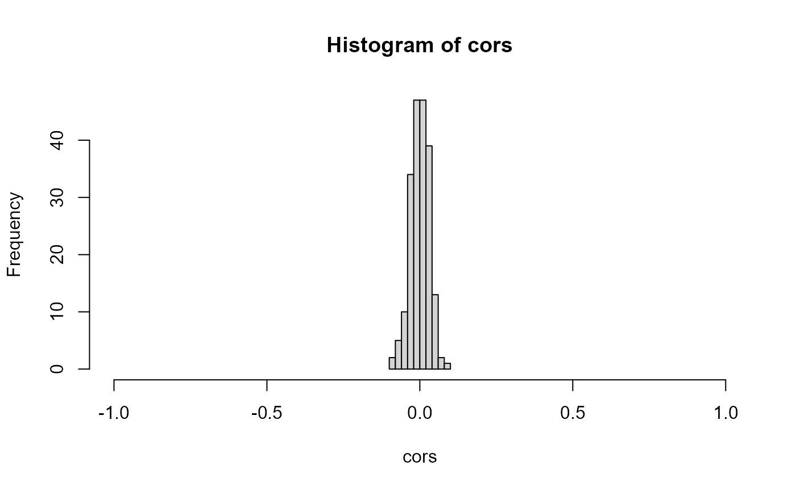
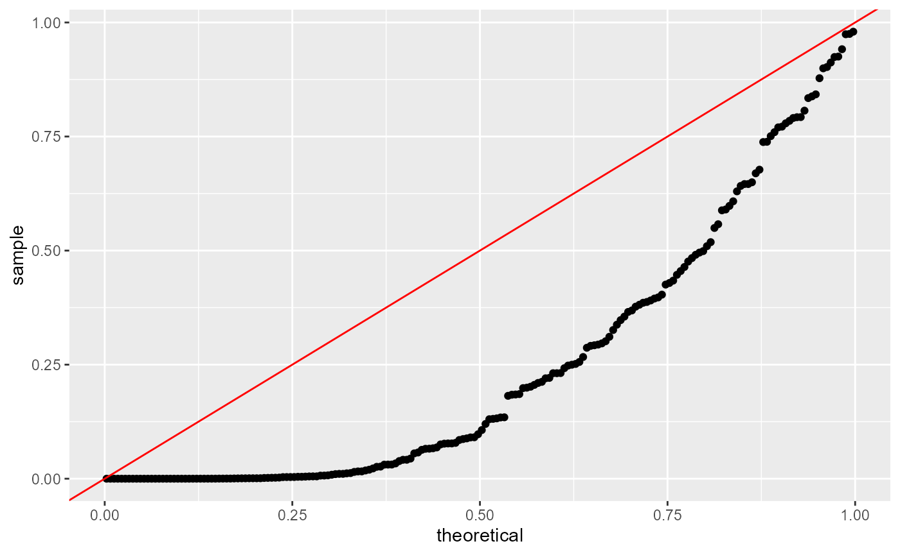
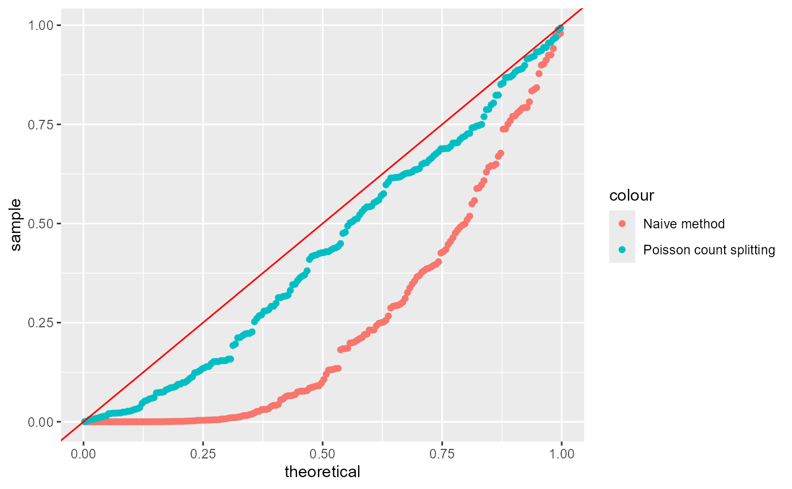
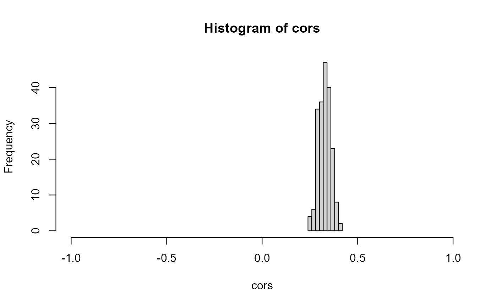
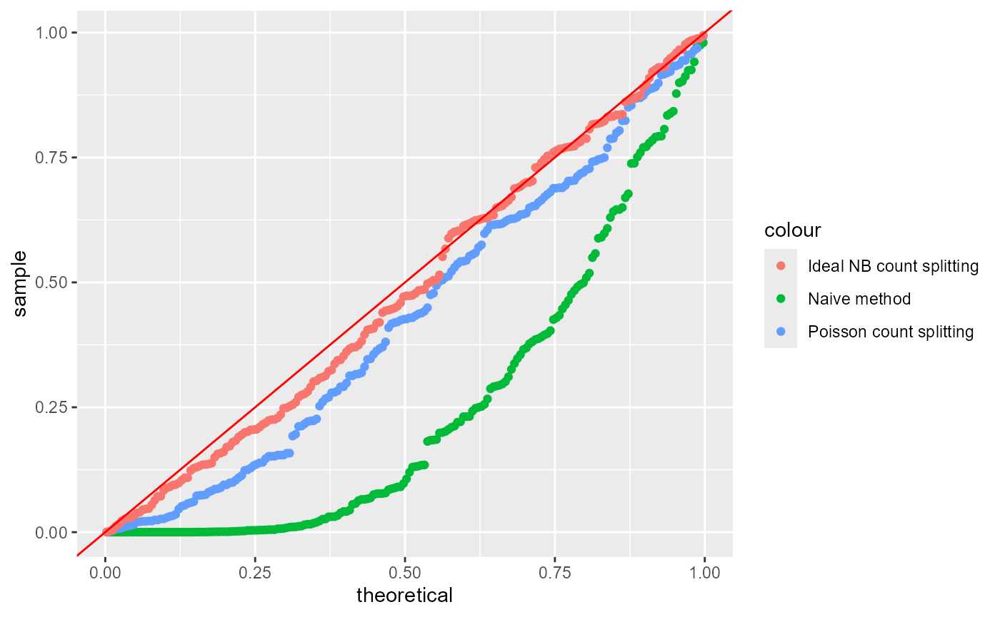
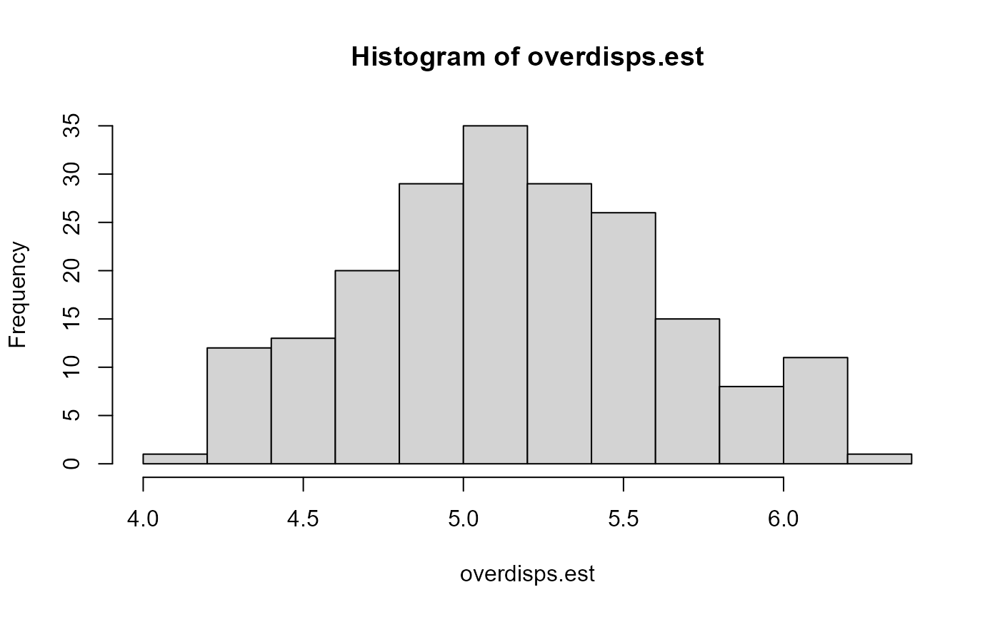
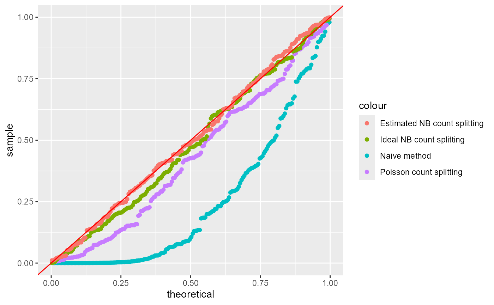
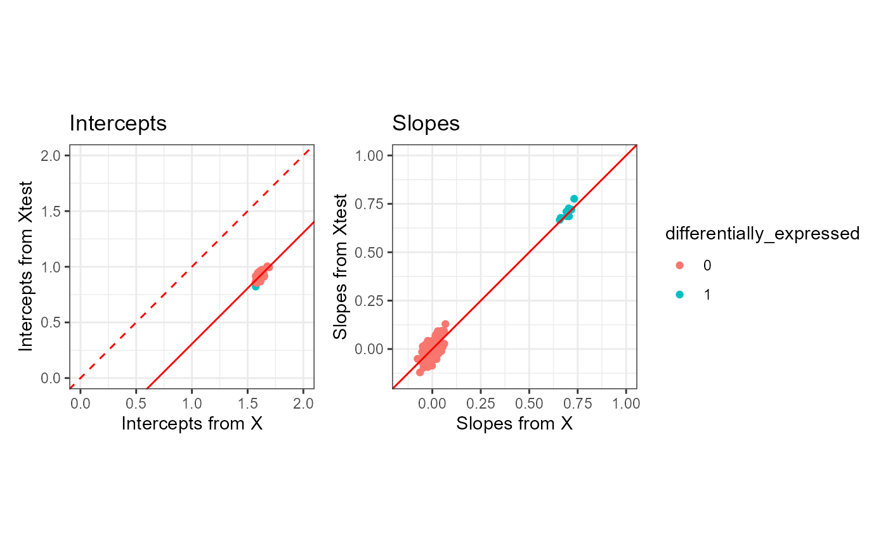

Tutorial: differential expression analysis on single cell RNA-seq data
countsplit_tutorial.RmdIn this tutorial, we use two simple simulated data sets to
demonstrate how to use the countsplit package and base R functions
(e.g. glm, kmeans) to cluster and test for differential expression in
scRNA-seq data. See our [cross-validation tutorial]((https://anna-neufeld.github.io/countsplit.tutorials/articles/MSE_tutorial.html)
for details on how to use the countsplit package to evaluate the output
of a clustering. See the non-introductory tutorials on this website to
learn how to integrate the countsplit package into three existing
scRNA-seq data analysis workflows for differential expression analysis
in R: Seurat, scran, and
monocle3. . We start by loading the packages we will be
working with. Make sure that remotes is installed by
running install.packages("remotes"), then type
remotes::install_github("anna-neufeld/countsplit")Simulated Poisson data with no true signal.
First suppose that we have \(n=1000\) cells and \(p=200\) genes. Suppose that every count \(\textbf{X}_{ij}\) is drawn from a \(\text{Poisson}(5)\) distribution. We first generate this data.
In this tutorial, we are interested in knowing which genes are differentially expressed across discrete cell types. We will cluster this data to estimate cell types and then test for differential expression. Since there are no true cell types and no truly differentially expressed genes in this data, a test of differential expression that controls the Type 1 error rate should give uniformly distributed p-values on this data.
The naive method
First, we will demonstrate that estimating the clusters and testing for differential expression using the same data does not control the Type 1 error rate. We refer to the practice of using the same data for clustering and differential expression testing as the “naive method” or “double dipping”.
clusters.full <- kmeans(log(X+1), centers=2)$cluster
results.naive <- t(apply(X, 2, function(u) summary(glm(u~as.factor(clusters.full), family="poisson"))$coefficients[2,]))
head(results.naive)
## Estimate Std. Error z value Pr(>|z|)
## [1,] 0.03958456 0.02820810 1.403305 1.605260e-01
## [2,] -0.10237171 0.02857552 -3.582497 3.403252e-04
## [3,] 0.11308989 0.02849956 3.968127 7.243959e-05
## [4,] 0.10833419 0.02828266 3.830410 1.279301e-04
## [5,] -0.08088836 0.02823097 -2.865235 4.166997e-03
## [6,] 0.04539730 0.02797837 1.622586 1.046780e-01The first line clusters the cells by applying k-means clustering with
k=2 on the log-transformed data with a pseudocount of 1, and saves the
cluster assignments as clusters.full. The second line tests
for differential gene expression using Poisson GLMs. For every gene
\(X_j\) in X, we fit a Poisson GLM of
\(X_j\) on clusters.full,
and save the summary of the slope coefficient in
results.naive. As shown in the output, we have saved a
slope coefficient estimate, a standard error, a z-value, and a p-value
for every gene in the dataset.
Even in these first 6 rows of results, we can see that the naive method assigns small p-values to many genes, despite the fact that no genes are truly differentially expressed in this data. We can make a uniform QQ-plot of the p-values for the naive method to see that they are not uniformly distributed and thus do not control the Type 1 error.
ggplot(data=NULL, aes(sample=results.naive[,4]))+geom_qq(distribution=stats::qunif)+geom_abline(col="red")
Poisson count splitting
We now address the issue using count splitting. In this section, we will (correctly) assume that the data follow a Poisson distribution. In the next section, we will consider the case where the data actually follow a negative binomial distribution.
The key steps are (1) running the countsplit function to
get Xtrain and Xtest and then (2) clustering
the data using Xtrain, and then fitting a GLM to test for
association between those clusters and each column of
Xtest. The countsplit function returns a list,
which we call split here, which contains the training set
and the test set.
Since we only want a single training set and a single test set, we
will set folds=2 when calling countsplit. By
default, this creates two identically distributed folds that each store
half of the information in the dataset. We can change the amount of
information allocated to the two folds by changing the
epsilion parameter. When epsilon is very close
to 0, the training matrix will be extremely sparse and the test matrix
will look a lot like X. When epsilon is very close to 1,
the training matrix will be nearly identical to X, but the
test matrix will be extremely sparse. The default in the
countsplit function is to set
epsilon=c(0.5, 0.5). See our preprint for more
information.
set.seed(2)
split <- countsplit(X, folds=2, epsilon=c(0.5,0.5))
Xtrain <- split[[1]]
Xtest <- split[[2]]Like before, we will cluster using k-means with log-transformed data
and we will fit Poisson GLMs for differential expression. Unlike before,
we will run the clustering on Xtrain and use
Xtest as the response in our GLMs.
clusters.train <- kmeans(log(Xtrain+1), centers=2)$cluster
results.countsplit <- t(apply(Xtest, 2, function(u) summary(glm(u~as.factor(clusters.train), family="poisson"))$coefficients[2,]))
head(results.countsplit)
## Estimate Std. Error z value Pr(>|z|)
## [1,] 0.028171056 0.03988386 0.7063272 0.47998469
## [2,] -0.014424364 0.04075410 -0.3539365 0.72338648
## [3,] 0.007947168 0.04093763 0.1941287 0.84607511
## [4,] 0.024273036 0.04004166 0.6061945 0.54438561
## [5,] -0.067879740 0.04045377 -1.6779582 0.09335526
## [6,] -0.052881527 0.04004365 -1.3205971 0.18663572We can see from the summary output that the p-values for the first 6 genes are much larger. When we make the same uniform QQ-plot as before, we see that the p-values obtained from count splitting are uniformly distributed. Since no genes are differentially expressed in our data, this means that count splitting controls the Type 1 error.
ggplot(data=NULL, aes(sample=results.countsplit[,4]))+geom_qq(distribution=stats::qunif)+geom_abline(col="red")
The crucial property that ensures that count splitting controls the
Type 1 error in this setting is independence between Xtrain
and Xtest. We can see that the columns of
Xtrain are independent of the columns of Xtest
in this data with no signal by looking at the sample correlations, which
are centered around \(0\).
 In summary, count splitting controls the Type 1 error when there is no true signal in the data.
Simulated negative binomial data with no true signal
We now generate data with no true signal, but we generate the data
from a negative binomial distribution. We use the mean + overdispersion
parameterization of the negative binomial, in which the mean is given by
mu and the variance is given by mu+mu^2/5.
set.seed(1)
n <- 1000
p <- 200
X <- matrix(rnbinom(n*p, mu=5, size=5), nrow=n)
## Sanity check on parameterization
mean(as.numeric(X))
## [1] 4.99826
var(as.numeric(X))
## [1] 9.966747
5+5^2/5
## [1] 10Once again, in this part of the tutorial, we will cluster the data to estimate cell types and then test for differential expression. Since there are no true cell types and no truly differentially expressed genes in this data (all genes and all cells have mean \(5\)), a test of differential expression that controls the Type 1 error rate should give uniformly distributed p-values on this data. We will compare the naive method to three version of count splitting.
We first note that the naive method still fails to control the Type 1
error rate. We use a negative binomial GLM (as implemented in the
MASS package, rather than a Poisson GLM, throughout this
section).
clusters.full <- kmeans(log(X+1), centers=2)$cluster
results.naive <- t(apply(X, 2, function(u) summary(MASS::glm.nb(u~as.factor(clusters.full)))$coefficients[2,]))
ggplot(data=NULL, aes(sample=results.naive[,4]))+geom_qq(distribution=stats::qunif)+geom_abline(col="red")
Unfortunately, we now also note that the default settings of count
splitting will cause us to fail to control the Type 1 error rate. Note
that we omit the arguments for folds and
epsilon , because two equally sized folds is the default
for count splitting.
set.seed(2)
split <- countsplit(X)
Xtrain <- split[[1]]
Xtest <- split[[2]]
clusters.train <- kmeans(log(Xtrain+1), centers=2)$cluster
results.countsplit <- t(apply(Xtest, 2, function(u) summary(MASS::glm.nb(u~as.factor(clusters.train)))$coefficients[2,]))
ggplot(data=NULL)+
geom_qq(aes(sample=results.naive[,4], col="Naive method"),
distribution=stats::qunif)+
geom_qq(aes(sample=results.countsplit[,4], col="Poisson count splitting"), distribution=stats::qunif)+
geom_abline(col="red")
By default, the countsplit function assumes that your
data follow a Poisson distribution. Now that the data are not Poisson
distributed, the default settings of countsplit fail to
lead to independent training and test sets, as we can see by looking at
the sample correlations between columns of Xtrain and
columns of Xtest. These correlations will get worse as the
amount of overdispersion in the negative binomial data increases.

To deal with this, we must tell the countsplit function
that our data are overdispersed. In this toy setting, we know the true
value of the overdispersion parameter; it is \(5\) for all genes. So we can perform the
ideal version of negative binomial count splitting where we plug in the
value of \(5\) for every gene.
set.seed(2)
splitNB <- countsplit(X, overdisps=rep(5,p))
Xtrain <- splitNB[[1]]
Xtest <- splitNB[[2]]
clusters.train <- kmeans(log(Xtrain+1), centers=2)$cluster
results.countsplit.NB <- t(apply(Xtest, 2, function(u) summary(MASS::glm.nb(u~as.factor(clusters.train)))$coefficients[2,]))
ggplot(data=NULL)+
geom_qq(aes(sample=results.naive[,4], col="Naive method"),
distribution=stats::qunif)+
geom_qq(aes(sample=results.countsplit[,4], col="Poisson count splitting"), distribution=stats::qunif)+
geom_qq(aes(sample=results.countsplit.NB[,4], col="Ideal NB count splitting"), distribution=stats::qunif)+
geom_abline(col="red")
We see that we have recovered Type 1 error control. Unfortunately, in
practice, we typically will not know the true value of the
overdispersion parameter and will instead need to plug in a
gene-specific estimate. A common way to estimate gene-specific
overdispersion parameters is with the sctransform package
in R. More specifically, if we call the vst()
function from the sctransform package on the gene-by-cell
matrix of counts (the transpose of \(X\), in this case), the estimated
gene-specific overdispersion paramateters are stored in the first column
of the model_pars section of the output.
rownames(X) <- 1:n
colnames(X) <- 1:p
overdisps.est <- sctransform::vst(t(X))$model_pars[,1]
##
|
| | 0%
|
|======================================================================| 100%
##
|
| | 0%
|
|======================================================================| 100%By default, the vst() function does not necessarily
return an estimated overdispersion for every single gene in the dataset.
For example, it only returns an estimated overdispersion for genes that
were expressed in at least 5 cells, and that were not found to be
approximately Poisson distributed. The code below verifies that, in this
case, we did in fact recieve an estimated overdispersion for all
cells.
We can see that, in this case, the estimation of the overdispersion parameters went fairly well. All of the true overdispersion parameters are 5, and the estimated overdispersion parameters are all between \(4\) and \(6\).
hist(overdisps.est)
We are now prepared to apply negative binomial count splitting with these estimated parameters. We see that the performance is approximately as good as it was in the ideal version of negative binomial count splitting.
set.seed(2)
splitNB.est <- countsplit(X, overdisps=overdisps.est)
Xtrain.est <- splitNB.est[[1]]
Xtest.est <- splitNB.est[[2]]
clusters.train.est <- kmeans(log(Xtrain.est+1), centers=2)$cluster
results.countsplit.NB.est <- t(apply(Xtest.est, 2, function(u) summary(MASS::glm.nb(u~as.factor(clusters.train.est)))$coefficients[2,]))
ggplot(data=NULL)+
geom_qq(aes(sample=results.naive[,4], col="Naive method"),
distribution=stats::qunif)+
geom_qq(aes(sample=results.countsplit[,4], col="Poisson count splitting"), distribution=stats::qunif)+
geom_qq(aes(sample=results.countsplit.NB[,4], col="Ideal NB count splitting"), distribution=stats::qunif)+
geom_qq(aes(sample=results.countsplit.NB.est[,4], col="Estimated NB count splitting"), distribution=stats::qunif)+
geom_abline(col="red")
Simulated Poisson data with true signal
We now return to the Poisson setting, for simplicity. We demonstrate the performance of count splitting on a simple simulated dataset that contains two true clusters. We first randomly assign the cells to one of two true clusters. We then generate data such that \(X_{ij} \sim \mathrm{Poisson}(\Lambda_{ij})\). Genes 1-10 are differentially expressed– for \(j=1,\ldots,10\), \(\Lambda_{ij} = 5\) for cells in cluster \(0\) and \(\Lambda_{ij}=10\) for cells in cluster \(1\). Genes 11-200 are not differentially expressed (\(\Lambda_{ij}=5\) for all cells).
set.seed(1)
n <- 1000
p <- 200
clusters.true <- rbinom(n, size=1, prob=0.5)
Lambda <- matrix(5, nrow=n, ncol=p)
Lambda[clusters.true==1, 1:10] <- 10
X <-apply(Lambda,1:2,rpois,n=1)We now count split the data and save Xtrain and
Xtest for later use. Note that we don’t actually need to
specify that we want two folds of data, as this is the default
setting.
split <- countsplit(X)
Xtrain <- split[[1]]
Xtest <- split[[2]]Effect of using Xtrain for cluster estimation.
First, let’s look at the effect of count splitting on our ability to
estimate the true clusters. If we use all of our data X to
estimate the clusters, we make only 5 errors.
clusters.full <- kmeans(log(X+1), centers=2)$cluster
table(clusters.true, clusters.full)
## clusters.full
## clusters.true 1 2
## 0 5 515
## 1 480 0If instead we use only Xtrain to estimate the clusters,
we make a few additional errors, but we still come very close to
estimating the true clusters.
clusters.train <- kmeans(log(Xtrain+1), centers=2)$cluster
table(clusters.true, clusters.train)
## clusters.train
## clusters.true 1 2
## 0 17 503
## 1 468 12The fact that cluster 0 in the true clustering maps to cluster 2 in the training set clustering is unimportant, but we will remember this later when we attempt to compare models.
Effect of using Xtest for inference
We now compare what happens when we regress \(X_j\) on the true clusters to what happens if we regress \(X_j^{\mathrm{test}}\) on the true clusters. We use the code below to fit a Poisson GLM of every gene on the true clusters; we save both the slope and the intercept. We are interested in the GLM slopes, as the GLM slopes are non-zero if the gene is differentially expressed across the clusters.
coeffs.X <- t(apply(X, 2, function(u) summary(glm(u~as.factor(clusters.true), family="poisson"))$coefficients[,1]))
coeffs.Xtest <- t(apply(Xtest, 2, function(u) summary(glm(u~as.factor(clusters.true), family="poisson"))$coefficients[,1]))The plot below shows that the slopes resulting from X
and the slopes resulting from Xtest tend to fall on the
diagonal line y=x and so tend to be approximately equal to
eachother. The intercepts, on the other hand, get shifted by
log(0.5) when we use the Xtest rather than
X. This is as we would expect (see Section 4.1 of our preprint).
differentially_expressed = as.factor(c(rep(1,10), rep(0,190)))
p1 <- ggplot(data=NULL, aes(x=coeffs.X[,1], y=coeffs.Xtest[,1], col=differentially_expressed))+
geom_point()+
geom_abline(intercept= log(0.5), slope=1, col="red")+
geom_abline(intercept= 0, slope=1, col="red", lty=2)+
coord_fixed()+xlim(0,2)+ylim(0,2)+
xlab("Intercepts from X")+ ylab("Intercepts from Xtest")+
ggtitle("Intercepts")+theme_bw()
p2 <- ggplot(data=NULL, aes(x=coeffs.X[,2], y=coeffs.Xtest[,2], col=differentially_expressed))+
geom_point()+
geom_abline(intercept=0, slope=1, col="red")+
coord_fixed()+xlim(-0.15,1)+ylim(-0.15,1)+
xlab("Slopes from X")+ ylab("Slopes from Xtest")+
ggtitle("Slopes")+theme_bw()
p1 + p2 + plot_layout(guides="collect")
Overall comparison of count splitting to ideal method
Finally, we compare the overall slope and intercept estimates that we
get from count splitting to what we would get in the ideal setting where
we get to regress \(X_j\) on the true
clusters. Note that coeffs.ideal is identical to
coeffs.X from the previous section; we reproduce it here
for convenience. Note also that we regress Xtest on
as.factor(clusters.train==1), rather than
as.factor(clusters.train), simply because we saw above that
the “cluster 1” in the training set maps to the “cluster 1” in the true
clustering, and this consistency will ensure that the coefficients from
the two models have the same sign.
coeffs.ideal <- t(apply(X, 2, function(u) summary(glm(u~as.factor(clusters.true), family="poisson"))$coefficients[,1]))
coeffs.countsplit <- t(apply(Xtest, 2, function(u) summary(glm(u~as.factor(clusters.train==1), family="poisson"))$coefficients[,1]))
p1 <- ggplot(data=NULL, aes(x=coeffs.ideal[,1], y=coeffs.countsplit[,1], col=differentially_expressed))+
geom_point()+
geom_abline(intercept= log(0.5), slope=1, col="red")+
geom_abline(intercept= 0, slope=1, col="red", lty=2)+
coord_fixed()+xlim(0,2)+ylim(0,2)+
xlab("Intercepts from ideal method")+ ylab("Intercepts from count splitting")+
ggtitle("Intercepts")
p2 <- ggplot(data=NULL, aes(x=coeffs.ideal[,2], y=coeffs.countsplit[,2], col=differentially_expressed))+
geom_point()+
geom_abline(intercept=0, slope=1, col="red")+
coord_fixed()+xlim(-0.15,1)+ylim(-0.15,1)+
xlab("Slopes from ideal method")+ ylab("Slopes from count splitting")+
ggtitle("Slopes")
p1 + p2 + plot_layout(guides="collect") & theme_bw()
Overall, we see general agreement between the parameters estimated
via countsplitting and those estimated via the ideal method. The slopes
tend to be the same, whereas the intercepts are shifted by
log(0.5), as expected based on our preprint. The slopes are
the quantities that we care to do inference on, as they measure
differential expression across clusters.